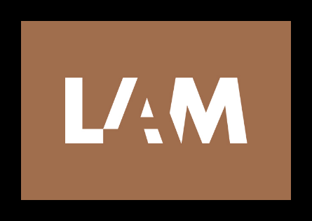
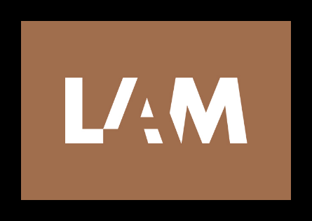

Hi I'm Scott Zico van den Broek, I am a Software Development student at Mediacollege Amsterdam. I chose this study because I like to work project-based and I like to solve problems.
I have experience with frontend-, backend- and game-development. My expertise lies with the back-end, because I think it is the most interesting side of this industry and the most chalenging. I also folowed some game-development lessons, but I quickly realised that it is not my cup of tea.
In the future I would like to learn even more about the backend of websites and databases and I hope to be better at front-end development.
cv